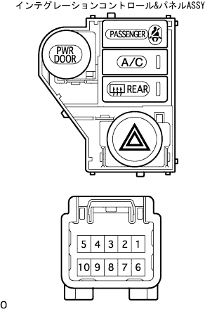

Integration control & panel ASSY car inspection |
| 1. Integration control & panel ASSY |
Hazard switch voltage inspection
|  |
Use SST (Toyota Electrical Tester) to check the voltage between the connector 9 terminals ← → body ground when pressing the integration control & panel ASSY hazard switch.